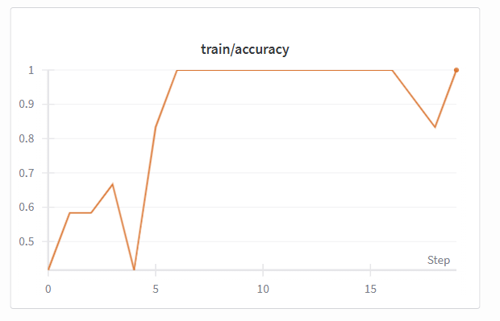

Technical Approach: AlexNet and Experiments
This page summarizes the deep learning approach I used for ZeroSkid. I trained AlexNet on my wet vs dry road dataset and ran several experiments to see how different hyperparameters and architectures affected performance.
Model and Preprocessing
- Base architecture: AlexNet (pretrained on ImageNet)
- Output classes: 2 (wet, dry)
- Input size: 224×224 RGB images
- Preprocessing: Resize, normalize with ImageNet mean/std
- Augmentation: Random horizontal flips (for some experiments)
I fine-tuned the final layers of AlexNet so it outputs two classes instead of the original 1000. The training and validation loops were implemented in PyTorch and logged to Weights & Biases (wandb) for tracking metrics and visualizations.
Experiments
I ran five main experiments to study how different choices affect performance:
- Experiment 1 – Baseline: AlexNet, batch size 16, learning rate 0.001, augmentation ON
- Experiment 2 – Batch Size 64: AlexNet, batch size 64, learning rate 0.001, augmentation ON
- Experiment 3 – Lower Learning Rate: AlexNet, batch size 16, learning rate 0.0001, augmentation ON
- Experiment 4 – No Augmentation: AlexNet, batch size 16, learning rate 0.001, augmentation OFF
- Experiment 5 – ResNet18: ResNet18 instead of AlexNet, batch size 16, learning rate 0.001, augmentation ON
Each experiment logged training/validation accuracy, loss curves, and a confusion matrix using wandb.
Visualizations
Below are sample plots and visualizations from the experiments (exported from wandb and added as images).
Baseline Accuracy (Exp 1)
Baseline Loss (Exp 1)

Learning Rate 0.0001 (Exp 3)

Confusion Matrix (Best Run)

Note: The exact images and filenames are placeholders. You can replace them with your own exported plots from wandb.
Results and Findings
Baseline (Experiment 1)
The baseline AlexNet model with batch size 16 and learning rate 0.001 reached around 70–75% validation accuracy. The training loss decreased smoothly, and the validation curves showed that the dataset was learnable, even though it is small.
Batch Size 64 (Experiment 2)
Increasing the batch size to 64 made training less stable. The loss curves were noisier and the validation accuracy did not improve compared to the baseline. This suggests that a smaller batch size works better for this dataset because it gives the model more frequent updates.
Lower Learning Rate (Experiment 3)
Lowering the learning rate to 0.0001 gave some of the best and most stable results. The training curves were smoother, and the validation accuracy stayed consistently around 70%. This experiment showed that a smaller learning rate helped the model train more carefully and avoid chaotic updates.
No Augmentation (Experiment 4)
When I turned data augmentation off, the model started to overfit quickly. Training accuracy went up, but validation accuracy got worse and the validation loss increased. This confirmed that augmentation was important for helping the model generalize beyond the small training set.
ResNet18 (Experiment 5)
ResNet18 is a deeper model, and it memorized the training data almost immediately (training accuracy reached 100%). However, the validation accuracy stayed around 65–70%, which was not much better than AlexNet. This suggests that with such a small dataset, a deeper architecture like ResNet18 tends to overfit and does not always give better real-world performance.
Takeaways
- The model can distinguish wet vs dry roads with about 70–75% accuracy.
- Smaller batch sizes and lower learning rates gave smoother and more reliable training.
- Data augmentation was important for preventing overfitting on the small dataset.
- Deeper models like ResNet18 are not always better when the dataset is limited.
- This project is a good starting point for turning wet road detection into a real safety feature.